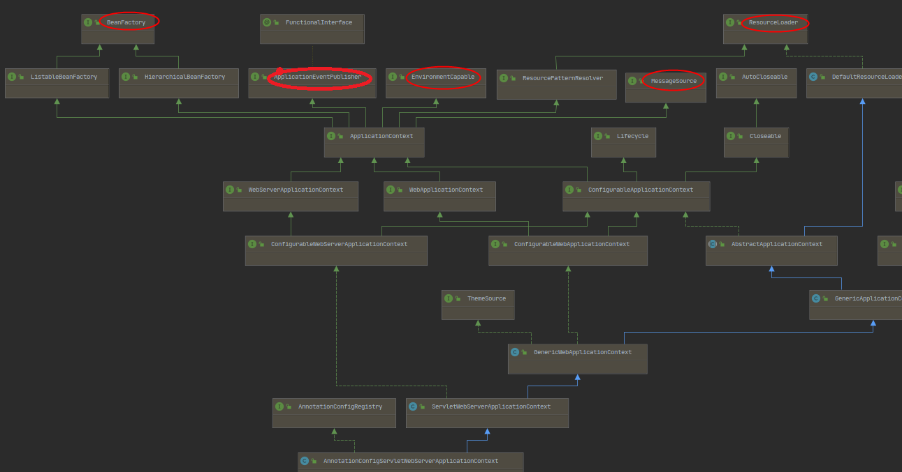

Environment 的抽象
Environment 接口是集成在容器中的一种抽象，它封装了应用环境的两个核心维度：配置文件（profiles） 和 属性（properties）。 - 配置文件（profiles） 配置文件是一组命名的、逻辑化的 Bean 定义集合，仅当指定的配置文件处于激活状态时，对应的 Bean 定义才会注册到容器中。无论 Bean 是通过 XML 还是注解定义，都可以为其分配配置文件。Environment 对象在配置文件管理中的作用是：确定当前激活的配置文件（若有），以及默认应激活的配置文件（若有）。 - 属性（properties） 属性在几乎所有应用中都扮演着重要角色，其来源多种多样，包括：属性文件、JVM 系统属性、系统环境变量、JNDI、Servlet 上下文参数、临时 Properties 对象、Map 对象等。Environment 对象在属性管理中的作用是：为用户提供便捷的服务接口，用于配置属性源（PropertySource）和从属性源中解析属性值。
Bean定义的Profiles
Bean 定义配置文件是核心容器提供的一种机制，支持在不同环境中注册不同的 Bean。这里的 “环境” 对不同用户可能有不同含义，该特性可满足多种使用场景，例如： - 开发环境使用内存数据源，而 QA 或生产环境从 JNDI 中查找同一数据源； - 仅当应用部署到性能测试环境时，才注册监控基础设施； - 为客户 A 和客户 B 的部署场景，注册不同的 Bean 自定义实现。
场景示例 假设某应用需要一个 DataSource： 测试环境：使用嵌入式数据库，配置如下：
@Bean
public DataSource dataSource() {
return new EmbeddedDatabaseBuilder()
.setType(EmbeddedDatabaseType.HSQL)
.addScript("my-schema.sql")
.addScript("my-test-data.sql")
.build();
}
现生产环境：数据源已注册到应用服务器的 JNDI 目录，配置如下：
@Bean(destroyMethod="")
public DataSource dataSource() throws Exception {
Context ctx = new InitialContext();
return (DataSource) ctx.lookup("java:comp/env/jdbc/datasource");
}
核心问题是如何根据当前环境切换这两种配置。Spring 提供的 Bean 定义配置文件功能，正是解决该问题的核心方案。
使用 @Profile 注解
@Profile 注解用于标识：仅当一个或多个指定的配置文件激活时，对应的组件才会被注册到容器中。基于上述示例，可通过 @Profile 重构配置：
@Configuration
@Profile("development")
public class StandaloneDataConfig {
@Bean
public DataSource dataSource() {
return new EmbeddedDatabaseBuilder()
.setType(EmbeddedDatabaseType.HSQL)
.addScript("classpath:com/bank/config/sql/schema.sql")
.addScript("classpath:com/bank/config/sql/test-data.sql")
.build();
}
}
@Configuration
@Profile("production")
public class JndiDataConfig {
@Bean(destroyMethod="")// 禁用默认的销毁方法推断
public DataSource dataSource() throws Exception {
Context ctx = new InitialContext();
return (DataSource) ctx.lookup("java:comp/env/jdbc/datasource");
}
}
配置文件表达式
@Profile 的值可以是简单配置文件名（如 production），也可以是配置文件表达式（支持复杂逻辑，如 production & us-east）。支持的运算符如下： - !：逻辑 “非”（NOT） - &：逻辑 “与”（AND） - |：逻辑 “或”（OR） 注意：若同时使用 & 和 |，必须通过括号明确优先级。例如 production & us-east | eu-central 是无效表达式，需改为 production & (us-east | eu-central)。
自定义组合注解
@Profile 可作为元注解，用于创建自定义组合注解。例如，定义一个 @Production 注解，替代 @Profile("production")：
@Target(ElementType.TYPE)
@Retention(RetentionPolicy.RUNTIME)
@Profile("production")
public @interface Production {
}
@Profile 生效规则
- 若 @Configuration 类标注 @Profile，则仅当指定配置文件激活时，该类中的所有 @Bean 方法和 @Import 注解才会生效；
- 若 @Component 或 @Configuration 类标注 @Profile({"p1", "p2"})，则仅当 p1 或 p2 激活时，该类才会被注册和处理；
- 若配置文件名前缀为 !（如 @Profile({"p1", "!p2"})），则仅当 p1 激活 或 p2 未激活时，标注的组件才会被注册。
方法级别的 @Profile
@Profile 也可标注在 @Bean 方法上，用于为同一个配置类中的某个 Bean 指定配置文件（例如，为同一个 Bean 提供不同环境的变体）：
@Configuration
public class AppConfig {
@Bean("dataSource")
@Profile("development") // development被激活时才会注册
public DataSource standaloneDataSource() {
return new EmbeddedDatabaseBuilder()
.setType(EmbeddedDatabaseType.HSQL)
.addScript("classpath:com/bank/config/sql/schema.sql")
.addScript("classpath:com/bank/config/sql/test-data.sql")
.build();
}
@Bean("dataSource")
@Profile("production") // production被激活时才会注册
public DataSource jndiDataSource() throws Exception {
Context ctx = new InitialContext();
return (DataSource) ctx.lookup("java:comp/env/jdbc/datasource");
}
}
注意：若 @Bean 方法存在重载（同名不同参数），则所有重载方法必须统一标注 @Profile 条件。否则，仅第一个重载方法的 @Profile 生效，且无法通过 @Profile 选择不同参数签名的重载方法
激活Profile
配置完成后，需明确告知 Spring 激活哪个配置文件。若未激活任何配置文件，容器将无法找到 dataSource 等按配置文件隔离的 Bean，会抛出 NoSuchBeanDefinitionException。
激活profile可以通过多种方式进行，但最直接的方式是通过ApplicationContext对Environment API进行编程。下面的例子展示了如何做到这一点。 1. 编程式激活
AnnotationConfigApplicationContext ctx = new AnnotationConfigApplicationContext();
ctx.getEnvironment().setActiveProfiles("development");
ctx.register(SomeConfig.class, StandaloneDataConfig.class, JndiDataConfig.class);
ctx.refresh();
- 声明式激活 通过 spring.profiles.active 属性激活，支持多种配置方式： 系统环境变量； JVM 系统属性（如 -Dspring.profiles.active=development）； web.xml 中的 Servlet 上下文参数； JNDI 配置； 集成测试中，通过 spring-test 模块的 @ActiveProfiles 注解
- 激活多个配置文件 编程式：setActiveProfiles() 支持可变参数
- Default Profile
default profile表示默认情况下启用：
@Configuration
@Profile("default")
public class DefaultDataConfig {
@Bean
public DataSource dataSource() {
return new EmbeddedDatabaseBuilder()
.setType(EmbeddedDatabaseType.HSQL)
.addScript("classpath:com/bank/config/sql/schema.sql")
.build();
}
}
如果没有profile被激活，就会创建这个dataSource。你可以把它看作是为一个或多个bean提供默认定义的一种方式。如果启用了任何配置文件，则默认配置文件不适用。
你可以通过使用环境中的setDefaultProfiles()或声明性地使用spring.profile.default属性来更改默认配置文件的名称。
属性源抽象PropertySource的抽象
Spring 的 Environment 抽象支持在可配置的属性源层级中搜索属性。 核心概念 PropertySource：对键值对属性源的简单抽象（如系统属性、环境变量、属性文件等）； 层级搜索：Environment 会在多个 PropertySource 中按优先级搜索属性，优先级高的属性源会覆盖优先级低的。 默认属性源 StandardEnvironment（适用于独立应用）：默认包含两个属性源，优先级为：JVM 系统属性（System.getProperties()）> 系统环境变量（System.getenv()）； StandardServletEnvironment（适用于 Web 应用）：在 StandardEnvironment 基础上，新增 Servlet 配置参数、Servlet 上下文参数、JNDI 属性源（若 JNDI 可用），优先级顺序为： ServletConfig 参数（如 DispatcherServlet 上下文） ServletContext 参数（web.xml 中的 context-param） JNDI 环境变量（java:comp/env/ 下的配置） JVM 系统属性（-D 命令行参数） 操作系统环境变量
ApplicationContext ctx = new GenericApplicationContext();
Environment env = ctx.getEnvironment();
boolean containsMyProperty = env.containsProperty("my-property");
System.out.println("Does my environment contain the 'my-property' property? " + containsMyProperty);
在这段代码中，我们看到了询问Spring是否为当前环境定义了my-property属性的高级方法。为了回答这个问题，Environment对象在一组PropertySource对象上执行搜索。PropertySource是对任何来源 key-value 键值对的简单抽象，Spring的StandardEnvironment配置了两个PropertySource对象--一个代表JVM系统属性集（System.getProperties()），一个代表系统环境变量集（System.getenv()）。
这些默认属性源存在于StandardEnvironment中，用于独立的应用程序。StandardServletEnvironment被填充了额外的默认属性源，包括servlet config和servlet上下文参数。它可以选择启用一个JndiPropertySource。
具体来说，当你使用StandardEnvironment时，如果运行时存在my-property系统属性或my-property环境变量，则调用env.containsProperty("my-property")返回true。
执行的搜索是分层的。默认情况下，系统属性优先于环境变量。因此，如果在调用env.getProperty("my-property")的过程中，my-property属性恰好在两个地方都被设置了，那么系统属性值就会 "获胜 "并被返回。请注意，属性值不会被合并，而是被前面的条目完全覆盖。
对于一个普通的StandardServletEnvironment，完整的层次结构如下，最高优先级的条目在顶部:
- ServletConfig 参数(if applicable — 例如
DispatcherServlet的上下文) - ServletContext 参数(web.xml context-param entries)
- JNDI environment variables (
java:comp/env/entries) - JVM system properties系统属性 (
-Dcommand-line arguments) - JVM system environment (操作系统环境变量operating system environment variables)
最重要的是，整个机制是可配置的。假如你有一个自定义的属性源，你想把它集成到这个搜索中。要做到这一点，请实现并实例化您自己的PropertySource，并将其添加到当前Environment的PropertySources集合中。下面的例子展示了如何做到这一点：
ConfigurableApplicationContext ctx = new GenericApplicationContext();
MutablePropertySources sources = ctx.getEnvironment().getPropertySources();
sources.addFirst(new MyPropertySource());
public class ApolloEncryptApplicationContextInitializer implements ApplicationContextInitializer<ConfigurableApplicationContext> {
public ApolloEncryptApplicationContextInitializer() {
}
// 会让bootstrap.yml配置文件失效，因为改变了bootstrap.yml在application启动之前就加载的默认配置
public void initialize(ConfigurableApplicationContext applicationContext) {
ConfigurableEnvironment environment = applicationContext.getEnvironment();
Properties properties = new Properties();
properties.setProperty("jasypt.encryptor.password", "aaaa");
PropertiesPropertySource propertiesPropertySource = new PropertiesPropertySource("applicationConfig", properties);
MutablePropertySources mutablePropertySources = environment.getPropertySources();
mutablePropertySources.addFirst(propertiesPropertySource);
}
}
在前面的代码中，MyPropertySource在搜索中以最高优先级被添加。如果它包含一个my-property属性，则检测并返回该属性，而不是任何其他PropertySource中的任何my-property属性。MutablePropertySources API暴露了许多方法，这些方法允许对属性源集合进行精确的操作。
@PropertySource的使用
使用 @PropertySource 注解 @PropertySource 注解提供了一种便捷的声明式方式，用于向 Spring 的 Environment 中添加 PropertySource。
假设有 app.properties 文件，内容为 testbean.name=myTestBean，通过 @PropertySource 引入：
@Configuration
@PropertySource("classpath:/com/myco/app.properties")
public class AppConfig {
@Autowired
Environment env;
@Bean
public TestBean testBean() {
TestBean testBean = new TestBean();
testBean.setName(env.getProperty("testbean.name"));
return testBean;
}
}
占位符支持
@PropertySource 的资源路径中支持 ${...} 占位符，占位符会从已注册的属性源中解析：
@Configuration
@PropertySource("classpath:/com/${my.placeholder:default/path}/app.properties")
public class AppConfig {
@Autowired
Environment env;
@Bean
public TestBean testBean() {
TestBean testBean = new TestBean();
testBean.setName(env.getProperty("testbean.name"));
return testBean;
}
}
假设my.placeholder存在于已经注册的某个属性源中（例如系统属性或环境变量），则placeholder会被解析为相应的值。如果没有，则使用default/path作为默认值。如果没有指定默认值，且无法解析属性，则会抛出IllegalArgumentException。
根据Java 8惯例，@PropertySource注解是可以重复的。但是，所有这样的@PropertySource注解都需要在同一层次上声明，可以直接在配置类上声明，也可以在同一个自定义注解中作为元注解声明。不推荐混合使用直接注解和元注解，因为直接注解有效地覆盖了元注解。如：
@Getter
@Setter
@Component
@ConfigurationProperties("data.redis")
@PropertySource(value = "classpath:data/read/test.properties", ignoreResourceNotFound = true)
@PropertySource(value = "file://${CONFIG_HOME}/data/redis/test.properties", ignoreResourceNotFound = true)
public class DataProperties {
private UserProps user;
private Device connect;
private String oauthJwtSecret;
private List<Device> devices;
@Getter
@Setter
public static class UserProps {
private String email;
private String countryCode;
private String password;
}
@Getter
@Setter
public static class Device {
private String uuid;
private String pid;
}
}
语句中的占位符解析
历史上，XML 元素中的占位符仅能通过 JVM 系统属性或环境变量解析。如今，由于 Environment 抽象已集成到整个容器中，占位符解析可通过 Environment 灵活配置： 调整系统属性和环境变量的搜索优先级； 移除默认属性源； 添加自定义属性源。 示例 无论 customer 属性定义在哪个属性源中，只要能被 Environment 访问到，以下配置即可生效：
<beans>
<import resource="com/bank/service/${customer}-config.xml"/>
</beans>
附录
环境变量system environment variables是和操作系统相关的，Windows和Linux是不同的语法
环境变量的获取通过System.getenv()，不提供设置环境变量的方法。
环境变量产生更多的全局效应，因为它们不仅对Java子进程可见，而且对于定义它们的进程的所有子进程都是可见的。在不同的操作系统上，它们的语义有细微的差别，比如，不区分大小写。因此环境变量更可能有意料不到的副作用。程序中尽可能使用系统属性。环境变量应该在需要全局效应的时候使用，或者在外部系统接口要求使用环境变量时使用（比如 PATH）
而系统属性 JVM system properties 是属于JVM的，
- 系统属性的设置: 通过JVM参数:
-D属性名=值或者在代码中通过Sytem.setProperty(String key, String value)来设置. - 系统属性的获取: 在Java中通过
System.getProperty(String key)获取属性值.
@Configuration
// @ConditionalOnExpression("!'pro'.equals(environment['env'])")
public class SwaggerEnableConfig implements EnvironmentAware {
@Override
public void setEnvironment(Environment environment) {
// 获取环境变量
Map<String, String> env = System.getenv();
// 获取系统属性
Properties properties = System.getProperties();
System.out.println(properties);
}
}

注册LoadTimeWeaver
LoadTimeWeaver被Spring用于在类被加载到Java虚拟机（JVM）中时进行动态转换。
开启加载时织入(load-time weaving)，需要开启配置：
@Configuration
@EnableLoadTimeWeaving
public class AppConfig {
}
一旦为ApplicationContext配置，该ApplicationContext中的任何bean都可以实现LoadTimeWeaverAware，从而接收对加载时织入实例的引用。在结合Spring的JPA支持时，这一点特别有用，因为在JPA类转换中可能需要加载时织入。更多细节请查阅 LocalContainerEntityManagerFactoryBean和 Load-time Weaving with AspectJ in the Spring Framework.
ApplicationContext的其他能力
正如在章节介绍中所讨论的那样，org.springframework.beans.factory包提供了管理和操作Bean的基本功能，包括以编程的方式。org.springframework.context包增加了ApplicationContext接口，它继承BeanFactory接口，另外继承了其他接口以更加面向应用框架的方式提供额外的功能。很多人在使用ApplicationContext时，完全采用声明式的方式，甚至不以编程的方式创建它，而是依靠ContextLoader等支持类来自动实例化ApplicationContext，作为Java EE Web应用正常启动过程的一部分。
为了以更加面向框架的风格增强 BeanFactory 接口的功能, context 包还提供了以下功能：
- 通过
MessageSource接口，访问i18n风格的消息 - 通过
ResourceLoader接口，访问resource，如URL和file - 通过
ApplicationEventPublisher接口，向ApplicationListener的实现事件发布 - 通过
HierarchicalBeanFactory接口，加载多个（分层）上下文，让每个上下文都集中在一个特定的层上，如应用程序的web层。

使用MessageSource实现国际化
ApplicationContext接口继承了名为MessageSource的接口，因此，它提供了国际化（"i18n"）功能。Spring还提供了HierarchicalMessageSource接口，它可以对消息进行分级解析。这些接口共同提供了Spring实现消息解析的基础。这些接口上定义的方法包括：
当加载ApplicationContext时，它会自动搜索上下文中定义的MessageSource Bean。这个Bean的名字必须是messageSource。如果找到了这样一个bean，所有对前面方法的调用都会委托给这个message source。如果没有找到message source，ApplicationContext 试图找到一个包含相同名称的 bean 的父类。如果找到了，它将使用该bean作为message source。如果ApplicationContext找不到任何message source，为了能够接受对上面定义的方法的调用，就会实例化一个空的DelegatingMessageSource。
Spring提供了两个MessageSource实现，即ResourceBundleMessageSource和StaticMessageSource。两者都实现了HierarchicalMessageSource，以便进行嵌套消息传递。StaticMessageSource很少使用，一般不用于生产环境，但提供了向消息源添加消息的程序化方法。下面的例子展示了ResourceBundleMessageSource:
<beans>
<bean id="messageSource"
class="org.springframework.context.support.ResourceBundleMessageSource">
<property name="basenames">
<list>
<value>format</value>
<value>exceptions</value>
<value>windows</value>
</list>
</property>
</bean>
</beans>
本例假设在classpath中定义了三个resource bundles资源包，分别为format,exceptions和windows。任何解析消息的请求都是以JDK标准的方式通过ResourceBundle对象解析消息来处理的。在本例中，假设上述两个资源捆绑文件的内容如下：
# in format.properties
message=Alligators rock!
# in exceptions.properties
argument.required=The {0} argument is required.
下一个例子显示了一个运行MessageSource功能的程序。请记住，所有的ApplicationContext实现也是MessageSource实现，因此可以转为MessageSource接口：
public static void main(String[] args) {
MessageSource resources = new ClassPathXmlApplicationContext("beans.xml");
String message = resources.getMessage("message", null, "Default", Locale.ENGLISH);
System.out.println(message);
}
这段代码的输出为Alligators rock!
总结一下，MessageSource定义在一个名为beans.xml的文件中，它存在于classpath的根目录下。messageSource bean定义通过它的basenames属性来引用一些资源捆绑。列表中传递给basenames属性的三个文件作为文件存在于你的classpath的根路径，分别称为format.properties、exceptions.properties和windows.properties。
下一个例子显示了传递给消息查找的参数。这些参数被转换为String对象，并插入到查找消息的占位符中：
public class Example {
private MessageSource messages;
public void setMessages(MessageSource messages) {
this.messages = messages;
}
public void execute() {
String message = this.messages.getMessage("argument.required",
new Object [] {"userDao"}, "Required", Locale.ENGLISH);
System.out.println(message);
}
}
这段代码输出为：
The userDao argument is required.
关于国际化（"i18n"），Spring的各种MessageSource实现遵循与标准JDK ResourceBundle相同的locale解析和回退规则。简而言之，继续前面定义的messageSource示例，如果你想解决针对英国（en-GB）本地化的消息，你将创建分别称为format_en_GB.properties、exceptions_en_GB.properties和windows_en_GB.properties的文件。
按照规定properties文件里的内容按照ISO-8859-1编码的，所以出现乱码是正常的！
通常情况下，locale解析是由应用程序的周围环境管理的。在下面的例子中，(英国)消息所针对的locale是手动指定的。
# in exceptions_en_GB.properties
argument.required=Ebagum lad, the ''{0}'' argument is required, I say, required.
public static void main(final String[] args) {
MessageSource resources = new ClassPathXmlApplicationContext("beans.xml");
String message = resources.getMessage("argument.required",
new Object [] {"userDao"}, "Required", Locale.UK);
System.out.println(message);
}
输出为：
Ebagum lad, the 'userDao' argument is required, I say, required.
您也可以使用MessageSourceAware接口来获取对任何已定义的MessageSource的引用。任何在实现MessageSourceAware接口的ApplicationContext中定义的Bean都会在创建和配置Bean时被注入应用上下文的MessageSource。
作为ResourceBundleMessageSource的替代，Spring提供了一个ReloadableResourceBundleMessageSource类。这个变体支持相同的捆绑文件格式，但比基于标准JDK的ResourceBundleMessageSource实现更加灵活。特别是，它允许从任何Spring资源位置读取文件（不仅仅是从classpath），并支持捆绑属性文件的热重载（同时有效地缓存它们）。详情请参见 ReloadableResourceBundleMessageSource 。
标准和自定义的Events
ApplicationContext中的event处理是通过ApplicationEvent类和ApplicationListener接口提供的。如果将实现ApplicationListener接口的Bean部署到上下文中，每次ApplicationEvent被发布到ApplicationContext时，该Bean都会得到通知。本质上，这就是标准的Observer观察者设计模式。
从Spring 4.2开始，event基础架构得到了显著的改进，提供了一个基于注解的模型，以及发布任何任意事件的能力（即不一定从ApplicationEvent扩展的对象）。当这样的object被发布时，我们会将其包裹在一个event中。
下面展示Spring提供的几个Event：
| Event | Explanation |
|---|---|
ContextRefreshedEvent |
在 ApplicationContext is initialized or refreshed (for example, by using the refresh() method on the ConfigurableApplicationContext interface)发布. Here, “initialized” means that all beans are loaded, post-processor beans are detected and activated, singletons are pre-instantiated, and the ApplicationContext object is ready for use. As long as the context has not been closed, a refresh can be triggered multiple times, provided that the chosen ApplicationContext actually supports such “hot” refreshes. For example, XmlWebApplicationContext supports hot refreshes, but GenericApplicationContext does not. |
ContextStartedEvent |
Published when the ApplicationContext is started by using the start() method on the ConfigurableApplicationContext interface. Here, “started” means that all Lifecycle beans receive an explicit start signal. Typically, this signal is used to restart beans after an explicit stop, but it may also be used to start components that have not been configured for autostart (for example, components that have not already started on initialization).当使用ConfigurableApplicationContext接口上的start()方法启动ApplicationContext时发布。在这里，"started "意味着所有的Lifecycle Bean都收到一个显式的启动信号。通常情况下，这个信号用于在显式停止后重新启动bean，但它也可以用于启动没有被配置为自动启动的组件（例如，在初始化时尚未启动的组件）。 |
ContextStoppedEvent |
Published when the ApplicationContext is stopped by using the stop() method on the ConfigurableApplicationContext interface. Here, “stopped” means that all Lifecycle beans receive an explicit stop signal. A stopped context may be restarted through a start() call. |
ContextClosedEvent |
Published when the ApplicationContext is being closed by using the close() method on the ConfigurableApplicationContext interface or via a JVM shutdown hook. Here, "closed" means that all singleton beans will be destroyed. Once the context is closed, it reaches its end of life and cannot be refreshed or restarted.当 "ApplicationContext "通过使用 "ConfigurableApplicationContext "接口上的 "close() "方法或通过JVM关闭钩子关闭时发布。在这里，"关闭 "意味着所有的单例Bean将被销毁。一旦上下文被关闭，它的生命就结束了，不能被刷新或重新启动。 |
RequestHandledEvent |
A web-specific event telling all beans that an HTTP request has been serviced. This event is published after the request is complete. This event is only applicable to web applications that use Spring’s DispatcherServlet.一个Web特有的事件，告诉所有Bean一个HTTP请求已经被服务。该事件会在请求完成后发布。该事件仅适用于使用Spring的 "DispatcherServlet "的Web应用程序。 |
ServletRequestHandledEvent |
A subclass of RequestHandledEvent that adds Servlet-specific context information. 增加了servlet特有的上下文信息 |
你也可以创建和发布自定义的event，
public class BlockedListEvent extends ApplicationEvent {
private final String address;
private final String content;
public BlockedListEvent(Object source, String address, String content) {
super(source);
this.address = address;
this.content = content;
}
// accessor and other methods...
}
要发布一个自定义的ApplicationEvent，请在ApplicationEventPublisher上调用publishEvent()方法。通常情况下，通过创建一个实现ApplicationEventPublisherAware的类并将其注册为Spring bean来实现。
public class EmailService implements ApplicationEventPublisherAware {
private List<String> blockedList;
private ApplicationEventPublisher publisher;
public void setBlockedList(List<String> blockedList) {
this.blockedList = blockedList;
}
public void setApplicationEventPublisher(ApplicationEventPublisher publisher) {
this.publisher = publisher;
}
public void sendEmail(String address, String content) {
if (blockedList.contains(address)) {
publisher.publishEvent(new BlockedListEvent(this, address, content));
return;
}
// send email...
}
}
public class BlockedListNotifier implements ApplicationListener<BlockedListEvent> {
private String notificationAddress;
public void setNotificationAddress(String notificationAddress) {
this.notificationAddress = notificationAddress;
}
public void onApplicationEvent(BlockedListEvent event) {
// notify appropriate parties via notificationAddress...
}
}
但注意，默认情况下，事件监听器同步接收事件。这意味着publishEvent()方法会阻塞，直到所有的监听器处理完事件。这种同步和单线程方法的一个优点是，当监听器接收到一个事件时，如果有事务上下文可用，它就会在发布者的事务上下文中操作。
Spring 的事件机制是为同一应用上下文中 Spring Bean 之间的简单通信而设计的。然而，对于更复杂的企业集成需求，单独维护的 Spring Integration 项目为构建轻量级的、面向模式的、事件驱动的架构提供了完整的支持，这些架构建立在著名的 Spring 编程模型之上。
基于注解的Event Listeners
在 Spring 4.2 中，可以通过 @EventListener 注解在 Bean 的任意 public 方法上注册事件监听器。
public class BlockedListNotifier {
private String notificationAddress;
public void setNotificationAddress(String notificationAddress) {
this.notificationAddress = notificationAddress;
}
@EventListener
public void processBlockedListEvent(BlockedListEvent event) {
// notify appropriate parties via notificationAddress...
}
}
方法签名再次声明它所监听的事件类型，但是，这次用了一个灵活的名字，而且没有实现特定的监听接口。只要实际的事件类型在其实现层次中能解析为你的通用参数，事件类型也可以通过通用来缩小。
如果您的方法应该监听多个事件，或者您想在定义方法时不使用任何参数，也可以在注解本身指定事件类型。下面的示例展示了如何做到这一点。
@EventListener({ContextStartedEvent.class, ContextRefreshedEvent.class})
public void handleContextStart() {
// ...
}
也可以通过使用SpEL表达式来添加额外的过滤，下面的示例显示了如何重写我们的通知器，使其仅在事件的内容属性等于my-event时才被调用。
@EventListener(condition = "#blEvent.content == 'my-event'")
public void processBlockedListEvent(BlockedListEvent blockedListEvent) {
// notify appropriate parties via notificationAddress...
}
每个SpEL表达式都是针对一个专用上下文进行评估的。下表列出了上下文可用的项目，以便您可以将它们用于条件事件处理。
| Name | Location | Description | Example |
|---|---|---|---|
| Event | root object | The actual ApplicationEvent. |
#root.event or event |
| Arguments array | root object | The arguments (as an object array) used to invoke the method. | #root.args or args; args[0] to access the first argument, etc. |
| Argument name | evaluation context | The name of any of the method arguments. If, for some reason, the names are not available (for example, because there is no debug information in the compiled byte code), individual arguments are also available using the #a<#arg> syntax where <#arg> stands for the argument index (starting from 0). |
#blEvent or #a0 (you can also use #p0 or #p<#arg> parameter notation as an alias) |
如果你需要发布一个事件作为处理另一个事件的结果，你可以改变方法签名来返回应该发布的事件，如下例所示:
@EventListener
public ListUpdateEvent handleBlockedListEvent(BlockedListEvent event) {
// notify appropriate parties via notificationAddress and
// then publish a ListUpdateEvent...
}
这个特性在异步监听时不支持
这个新方法为上面方法处理的每个BlockedListEvent发布一个新的ListUpdateEvent。如果你需要发布多个事件，你可以返回一个事件集合来代替。
在使用异步事件时要注意以下限制。
-
如果异步事件监听器抛出了一个Exception，它不会传播给调用者，请参见AsyncUncaughtExceptionHandler了解更多细节。更多细节请参见AsyncUncaughtExceptionHandler。
-
异步事件监听器方法不能通过返回一个值来发布后续事件。如果你需要发布另一个事件作为处理结果，注入一个ApplicationEventPublisher来手动发布事件。
异步的监听
如果你想异步地处理事件，可以使用@Async
@EventListener
@Async
public void processBlockedListEvent(BlockedListEvent event) {
// BlockedListEvent is processed in a separate thread
}
有序的监听
如果你想在另一个监听器之前先监听到事件，可以使用@Order
@EventListener
@Order(42)
public void processBlockedListEvent(BlockedListEvent event) {
// notify appropriate parties via notificationAddress...
}
泛型event
你也可以使用泛型来进一步定义你的事件结构。考虑使用EntityCreatedEvent
@EventListener
public void onPersonCreated(EntityCreatedEvent<Person> event) {
// ...
}
由于泛型擦除，只有当被触发的事件解析了事件监听器过滤的通用参数时，这个方法才会起作用（也就是说，类似于class PersonCreatedEvent extends EntityCreatedEvent
在某些情况下，如果所有的事件都遵循相同的结构，这可能会变得相当乏味（就像前面例子中的事件一样）。在这种情况下，你可以实现ResolvableTypeProvider来引导框架超越运行时环境提供的内容。下面的事件展示了如何做到这一点。
public class EntityCreatedEvent<T> extends ApplicationEvent implements ResolvableTypeProvider {
public EntityCreatedEvent(T entity) {
super(entity);
}
@Override
public ResolvableType getResolvableType() {
return ResolvableType.forClassWithGenerics(getClass(), ResolvableType.forInstance(getSource()));
}
}
方便地获取Low-level Resources
为了最佳的使用和理解应用上下文，您应该熟悉Spring的 Resource 抽象，如Resources中所述。
一个应用上下文就是一个ResourceLoader，它可以用来加载Resource对象。Resource本质上是JDK java.net.URL类的一个功能更丰富的版本。事实上，Resource的实现在适当的地方包裹了java.net.URL的实例。Resource可以以透明的方式从几乎任何位置获取低级资源，包括从classpath、文件系统位置、任何可以用标准URL描述的地方以及其他一些变化。如果资源位置字符串是一个简单的路径，没有任何特殊的前缀，那么这些资源的来源是特定的，适合于实际的应用程序上下文类型。
你可以配置一个部署到应用上下文中的Bean来实现特殊的回调接口ResourceLoaderAware，以在初始化时自动回调应用上下文本身传递的ResourceLoader。你也可以暴露 Resource类型的属性，用于访问静态资源。它们像其他属性一样被注入其中。您可以将这些Resource属性指定为简单的字符串路径，并在Bean部署时依靠自动从这些文本字符串转换为实际的Resource对象。
提供给ApplicationContext构造函数的位置路径或路径实际上是资源字符串，以简单的形式，根据具体的上下文实现进行适当处理。例如ClassPathXmlApplicationContext将一个简单的位置路径视为classpath。你也可以使用带有特殊前缀的位置路径（资源字符串）来强制加载来自classpath或URL的定义，而不管实际的上下文类型如何。
1.15.4 跟踪应用启动
ApplicationContext管理Spring应用程序的生命周期，并围绕组件提供丰富的编程模型。因此，复杂的应用程序可以有同样复杂的组件图和启动阶段。
通过特定的指标来跟踪应用程序的启动步骤，可以帮助了解在启动阶段的时间花费在哪里，但也可以作为一种方法来更好地理解整个上下文生命周期。
AbstractApplicationContext(及其子类)的工具是ApplicationStartup，它收集各种启动阶段的StartupStep数据。
应用上下文生命周期（基础包扫描，配置类管理）。
beans生命周期（实例化、智能初始化、后处理）。
应用events 处理
// create a startup step and start recording
StartupStep scanPackages = this.getApplicationStartup().start("spring.context.base-packages.scan");
// 在当前阶段添加标记
scanPackages.tag("packages", () -> Arrays.toString(basePackages));
// 执行我们要测量的实际步骤
this.scanner.scan(basePackages);
// end the current step
scanPackages.end();
应用程序的上下文已经有了多个步骤的工具。一旦被记录下来，这些启动步骤就可以通过特定的工具进行收集、显示和分析。对于现有启动步骤的完整列表，您可以查看专门的附录部分。
默认的ApplicationStartup实现是一个无操作的变量，以最小的开销。这意味着在应用程序启动期间，默认情况下不会收集任何指标。Spring Framework提供了一个用Java Flight Recorder跟踪启动步骤的实现。FlightRecorderApplicationStartup。要使用这个变量，您必须在创建ApplicationContext后立即为其配置一个实例。
如果开发者要提供自己的AbstractApplicationContext子类，或者希望收集更精确的数据，他们也可以使用ApplicationStartup基础架构。
ApplicationStartup的目的是只在应用程序启动期间和核心容器中使用；这绝不是Java剖析器或指标库（如Micrometer）的替代品。 要开始收集自定义的StartupStep，组件可以直接从应用上下文中获取ApplicationStartup实例，使其组件实现ApplicationStartupAware，或者在任何注入点上询问ApplicationStartup类型。
开发人员在创建自定义启动步骤时，不应使用 "spring.*"命名空间。这个命名空间是为Spring内部使用而保留的，可能会发生变化。
BeanFactory
BeanFactory API 为 Spring 的控制反转（IoC）功能提供了底层基础。其具体的契约接口主要用于与 Spring 其他组件及相关第三方框架的集成，而它的DefaultListableBeanFactory实现类，则是更高层级的GenericApplicationContext容器中的核心委托类。
BeanFactory 及其相关接口（如 BeanFactoryAware、InitializingBean、DisposableBean）是其他框架组件的重要集成点。这些接口无需依赖任何注解，甚至无需反射机制，就能让容器与组件之间实现极高效率的交互。应用层的 Bean 也可以使用这些回调接口，但实际开发中，通常更倾向于通过注解或编程式配置的方式，使用声明式的依赖注入。
注意：核心的 BeanFactory API 及其 DefaultListableBeanFactory 实现类，并不会对所使用的配置格式或任何组件注解做预设限制。各类配置格式和注解的支持能力，均通过扩展组件（如 XmlBeanDefinitionReader、AutowiredAnnotationBeanPostProcessor）实现，这些扩展组件均以通用的BeanDefinition对象作为核心元数据载体进行操作。这正是 Spring 容器具备高度灵活性和可扩展性的本质原因。
BeanFactory 还是ApplicationContext?
本节将说明 BeanFactory 和 ApplicationContext 两个容器层级的区别，以及二者在容器启动过程中的不同影响。
除非有充分的特殊理由，否则都应优先使用 ApplicationContext 容器，其中GenericApplicationContext及其子类AnnotationConfigApplicationContext，是自定义容器启动流程时最常用的实现类。对于所有常规开发场景，它们都是 Spring 核心容器的主要入口，可完成配置文件加载、类路径扫描触发、编程式注册 Bean 定义和注解类，以及（从 Spring 5.0 开始）注册函数式 Bean 定义等操作。
由于 ApplicationContext 包含了 BeanFactory 的全部功能，因此除了需要对 Bean 处理流程进行完全自定义控制的场景外，通常推荐优先使用 ApplicationContext，而非原生的 BeanFactory。在 ApplicationContext 容器中（如 GenericApplicationContext 实现类），容器会通过约定的方式自动识别多种类型的 Bean（即根据 Bean 名称或 Bean 类型识别，后置处理器便是典型）；而原生的 DefaultListableBeanFactory 则对所有特殊 Bean 均无感知。
对于注解处理、AOP 代理等众多容器扩展功能而言，BeanPostProcessor扩展点是实现的核心。如果仅使用原生的 DefaultListableBeanFactory，这类后置处理器默认不会被容器检测到，也无法被激活。这种情况容易造成开发困惑，因为此时的 Bean 配置本身并无错误，只是需要通过额外的配置步骤，才能完成容器的完整启动。
下表列出了 BeanFactory 和 ApplicationContext 接口及其实现类所提供的功能对比。
下面表格展示 BeanFactory 和 ApplicationContext 提供的功能列表：
| Feature | BeanFactory |
ApplicationContext |
|---|---|---|
| Bean 实例化 / 依赖装配 | Yes | Yes |
| Integrated lifecycle management | No | Yes |
| BeanPostProcessor 自动注册 | No | Yes |
| BeanFactoryPostProcessor 自动注册 | No | Yes |
| 便捷的 MessageSource 访问（用于国际化） | No | Yes |
| 内置的 ApplicationEvent 发布机制 | No | Yes |
这也是在基于 Spring 开发的应用中，优先使用各类 ApplicationContext 实现类，而非原生 DefaultListableBeanFactory的原因 —— 尤其是在典型的企业级开发中，需要依赖 BeanFactoryPostProcessor 和 BeanPostProcessor 实例实现容器扩展功能时，这一选择的优势更为明显。
AnnotationConfigApplicationContext会自动注册所有常用的注解后置处理器，还能通过@EnableTransactionManagement等配置注解，在底层自动引入额外的处理器。在 Spring 基于注解的配置模型抽象层级中，Bean 后置处理器的概念已成为容器的底层实现细节，对开发人员完全透明。